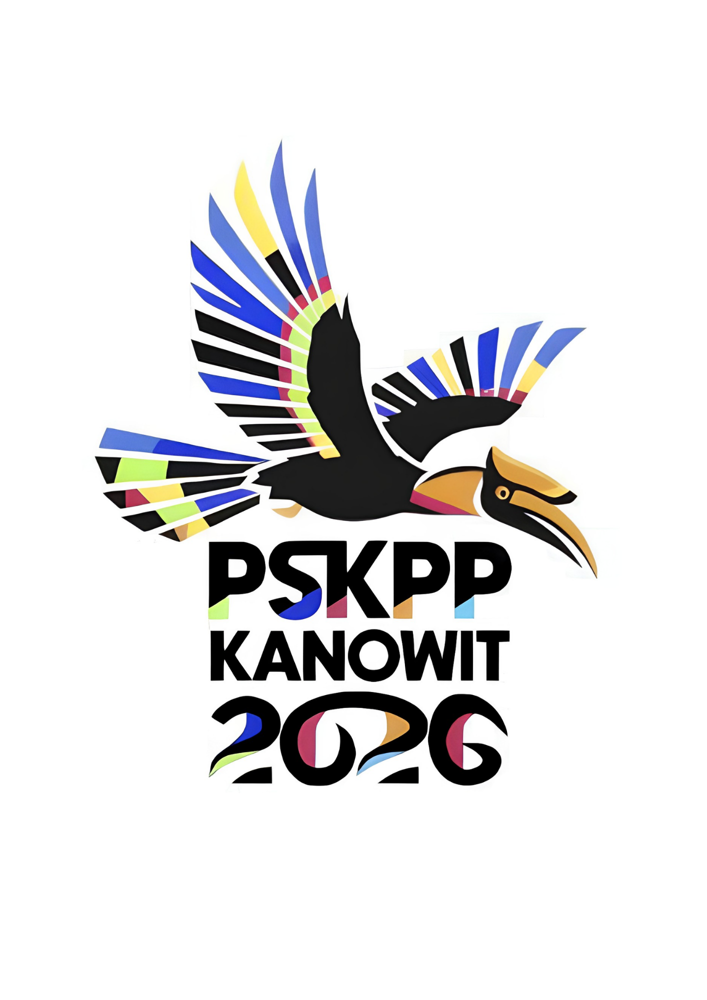
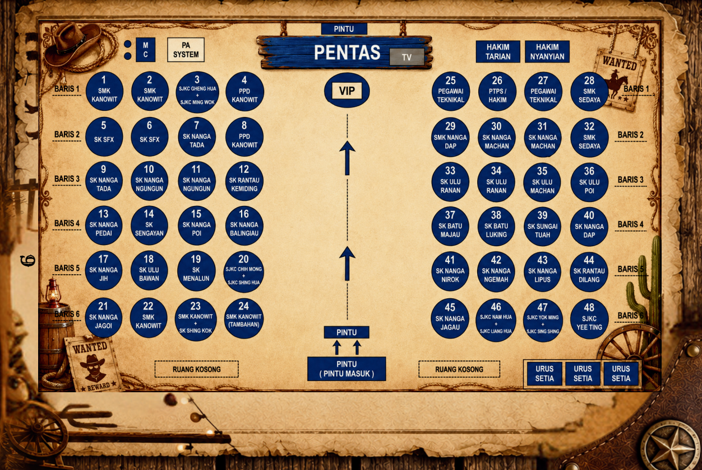

KARNIVAL PSKPP
PERINGKAT DAERAH KANOWIT 2026
TOGETHER WE RIDE, TOGETHER WE SHINE!
Merapatkan ukhuwah, menyalakan semangat perjuangan sukan yang harmoni, dan memajukan maruah warga pendidik Daerah Kanowit ke mercu kegemilangan.
Pembukaan Majlis Penutupan:
Hari
Jam
Minit
Saat

OBJEKTIF & MATLAMAT
Objektif Utama
Silaturrahim
Mewujudkan hubungan silaturrahim yang lebih akrab, harmoni dan utuh.
Setia Kawan
Memupuk semangat kerjasama dan setia kawan antara guru dan staf sokongan.
Persaingan Sihat
Menyemarakkan lagi persaingan yang sihat serta berintegriti tinggi.
Matlamat Karnival
LOGO RASMI PSKPP KANOWIT

"Identiti Rasmi: Sayap Kenyalang Kanowit"BURUNG KENYALANG
Lambang kebanggaan Sarawak (Bumi Kenyalang) dan identiti mutlak lokasi penganjuran sukan iaitu Daerah Kanowit.
POSISI 'TERBANG'
Menggambarkan aspirasi tinggi dan kemajuan cemerlang para pendidik dalam mencapai kejayaan sukan, integriti & kebudayaan.
REKA BENTUK GEOMETRIK
Melambangkan pemodenan, inovasi digital dan penyatuan harmoni pelbagai elemen zon penganjur menjadi satu entiti yang gagah berwibawa.
ALUNAN NOMBOR & WARNA-WARNI
Merah, biru, hijau, kuning, jingga & hitam mewakili 4 zon yang bertanding. Lengkungan berpusat '2' dan '6' (2026) pula menyerupai alunan Sungai Rajang & Sungai Kanowit.
SEJARAH KEDUDUKAN ZON (2022-2025)
CHRONICLES OF CHAMPIONS
Adakah Zon Kanowit berjaya mempertahankan kejuaraan di tahun 2026
4 ZON
- SK Ulu Machan (K)
- PPD Kanowit
- SMK Kanowit
- SK Ng Machan
- SK Ng Jagoi
- SJKC Cheng Hua
- SK Ng Jagau (K)
- SMK Ng Dap
- SK Ng Ngungun
- SK Ng Dap
- SK Ng Nirok
- SK Ng Poi
- SK Ng Ngemah
- SK Ng Menalun
- SJKC Nam Hua
- SJKC Ming Wok
- SMK Sedaya (K)
- SK Sengayan
- SK Ng Tada
- SK Ulu Bawan
- SK Ng Balingiau
- SK Ng Jih
- SK Sg Tuah
- SK Rt. Dilang
- SJKC Liang Hua
- SJKC Shing Kok
- SJKC Shing Sing
- SK Ulu Ranan (K)
- SK St. Francis
- SK Rt Kemiding
- SK Bt Luking
- SK Ulu Poi
- SK Ng Lipus
- SK Ulu Majau
- SJKC Yee Ting
- SJKC Yok Ming
- SJKC Chih Mong
- SJKC Shing Hua
ACARA & GARIS MASA PERTANDINGAN
12 JUN - 4 JULAI 202615 Acara Utama Dipertandingkan
HARI PERTAMA: 12 JUN
- Sukan Fizikal: Bola Sepak & Bola Jaring
- Sukan Minda & Seni: Memasak (Menu Western), Scrabble
- Hiburan: Saringan Karaoke
HARI KEDUA: 13 JUN
- Sukan Fizikal: Badminton (Wanita), Bola Baling, Sepak Takraw
- Riadah Alam: Pertandingan Memancing Ikan & Udang
HARI KETIGA: 20 JUN
- Sukan Gelanggang: Badminton (Lelaki), Ping Pong
- Sukan Tradisional: Menyumpit
- Acara Khas: Petanque (VVIP)
HARI KEEMPAT: 21 JUN
- Sukan Gelanggang: Bola Tampar & Futsal
KEMUNCAK ACARA: 3 - 4 JULAI
- Aktiviti: Majlis Penutupan Resmi & Jamuan Merarau PSKPP 2026 di Dewan Hornbill
- Seni & Persembahan: Pertandingan Akhir Tarian Kebudayaan & Akhir Pertandingan Karaoke
- Khas: Penyerahan Bendera Pengelola kepada Zon DAP (Penganjur 2027)
ATUR CARA MAJLIS PENUTUPAN & MERARAU
Tarikh: 4 Julai 2026 (Sabtu) | Tempat: Dewan Hornbill, UTS Sibu
Pendaftaran, sesi penempatan meja, dan persiapan awal di Dewan Hornbill.
Y.B. Tuan Allan Siden Gramong (ADUN N50 Machan)
- Nyanyian Lagu Kebangsaan 'Negaraku' & Lagu Negeri Sarawak 'Ibu Pertiwiku'
- Bacaan Doa oleh Ustaz Mohammad Hazwan
- Ucapan Aluan Pengerusi PSKPP Kanowit 2026
- Ucapan Perasmian & Penutupan oleh YB Tuan Allan Siden Gramong
- Gimik Simbolik Perasmian Penutupan
- Tayangan Selayang Pandang
PERTANDINGAN TARIAN
Selingan 1: Persembahan tarian kebudayaan penuh tradisi.
AKHIR KARAOKE
Selingan 2: Vokal mantap barisan guru-guru.
- Penyampaian Hadiah Juara Cabaran Penurunan Berat Badan (Weight Loss Challenge)
- Penyampaian Hadiah Pertandingan Karaoke & Tarian
- Pengumuman Pemenang Keseluruhan Karnival PSKPP 2026
- THE COUNTRY GLAM AWARD (Anugerah Khas Pakaian Tema Western Terbaik)
- Penyampaian Cenderamata Kenang-kenangan kepada Perasmi Utama
Sesi Penyerahan Bendera Pengelola . Nyanyian Lagu: "Fly Kenyalang Fly" diikuti sesi fotografi kenang-kenangan bersama semua AJK pelaksana.

JAWATANKUASA INDUK & PELAKSANA
- En. Andrew Anak Atan
- En. Balintian Anak Norbet Jubit
- Pn. Tanut Anak Ambol
- En. Alex Anak Belalang
- En. Clinton Anak Genta
- En. Nicholas Burung Anak Rentap (K)
- En. Duli Anak Ninti
- En. Mathew Madau Anak Yok (K)
- Cik Siung Siew Shong
- Cik Susy Anak Genta
- Cik Stephanie Gloria Bt Jugi
- Cik Nor Hidayah Bt Mohamad
- Pn. Sii Siew Eng
- Cik Sera Anak Pengiran
- En. Nelson Anak Juni (K)
- Pn. Kattiny Binti Bantan
- Cik Melizana Anak Injun
- Cik Amylia Mit Anak Mawan (K)
- Cik Esther Ukop Anak Jaraw
- Pn. Aly Anak Kuntel (K)
- Pn. Grace Julan Chambers
- En. Liong Ka Chong
- Ustaz Mohammad Hazwan Bin Denny Asman (Doa)
- Pn. Victoria Jane (K - Laporan)
- Pn. Suzanne Suly Anak Itat
- Pn. Celia Galeh (K - Teks)
- Pn. Annie Lungie
- Pn. Kong Poh Hua (K)
- Pn. Cyrene Anak Nyalong
- Cik Sharon Kong Li Li
- Cik Mahsida Bt Daud
- Cik Hiza Binti Gafar
- En. George Minggat (K)
- En. Raphael Mbok
- En. Mohd Syaqir (K)
- En. Mohd Azlan
- Shahuddin Bin Maslan (K)
- En. Athanasius Aka Anak Paul
- Andrew Kana Anak Ambrose Abong
- En. Mukit Nyua (K)
- En. Mohd Azhar Bin Zulkifli
- Puan Agnes Anak Aji
- Puan Molly Anak George
- Pn. Lu Cheng Kuan (K)
- En. Aziz Bin Suaidi
- Nursyakirah Binti Abdullah
- Pn. Jenny Mickey Surang
- Pn. Josephine Juri Anak Kubu (K)
- Cik Neilly Anak Augustine Engga
- Pn. Lenie Anak Lutin (K - Selingan)
- Pn. Juana Anak Utek
- En. Thomas Liong Sen Fui (K - Banner)
- Pn. Susana Anak Lanie (K - Hiasan)
- Pn. Nadia Anak Johnny
- Cik Lydia Anak Kandau
- Cik Alfera Anak Daniel
- En. Zultiqa Amirullah Bin Ibrahim (K - Gimik)
- Cik Aishah Binti Mohd Zain
- Pn. Niru Anak Kayu
- Cik Wenie Ak Joseph
- Pn. Phan Kee Ling (K - Kebersihan)
- En. Muhd Hafizulruddin Abu Bakar
- En. Polycarp Anak Anthony Karim
- Encik Kana Dana
JUTAAN TERIMA KASIH
Setinggi-tinggi penghargaan dan ucapan terima kasih yang tidak terhingga kepada:
ADUN N50 Machan, atas kesudian merasmikan Karnival PSKPP Peringkat Daerah Kanowit 2026.
Sokongan, bimbingan dan pimpinan jitu sepanjang persediaan penganjuran.
Kerja keras dan pengorbanan masa, tenaga, serta dana bagi menjayakan acara.
Semoga semangat kesukanan dan jalinan persaudaraan sentiasa berkekalan dan subur mekar di antara kita semua. Hingga bertemu lagi di kejohanan akan datang!
PAPAN UCAPAN WARGA PSKPP KANOWIT
Tinggalkan ucapan / coretan kata semangat anda di sini!
"Semangat yang luar biasa daripada penganjur Zon Kanowit!"
— Cikgu x (Zon Sedaya)"Sukan menyatukan kita semua warga pendidik Kanowit. Terbaik semua"
— Mr. Y (PPD Kanowit)